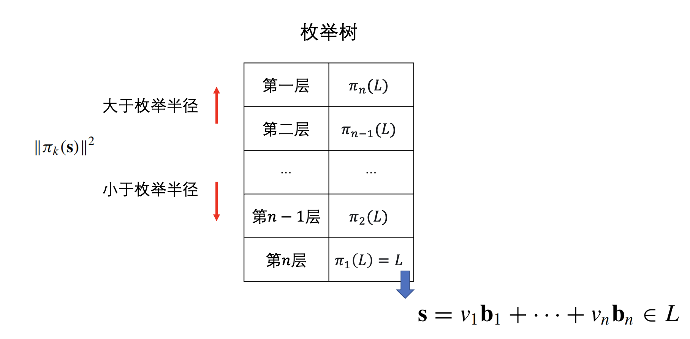
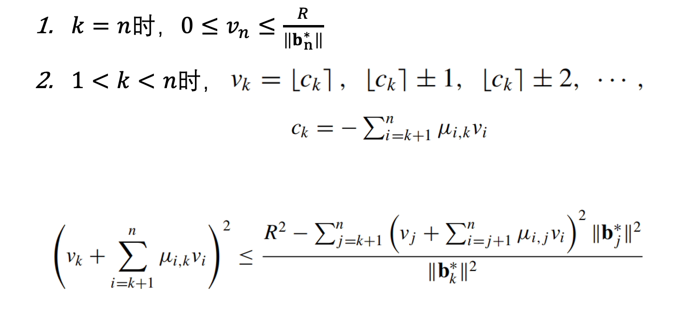
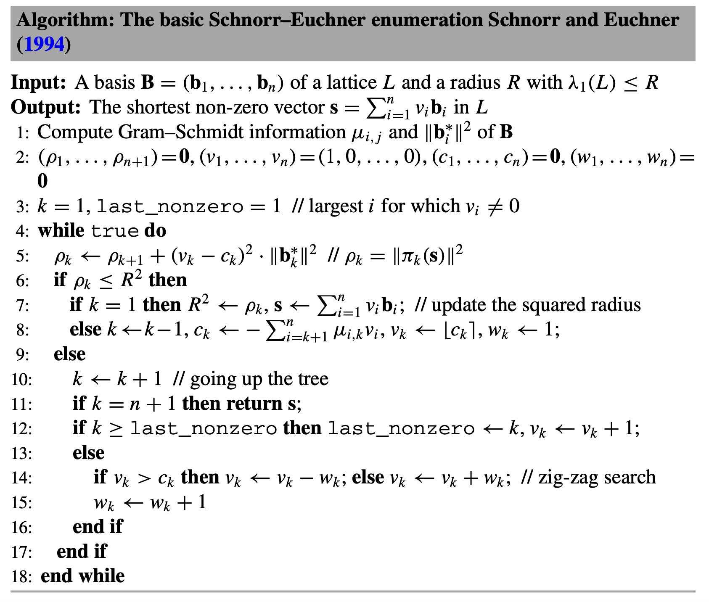

Schnorr-Euchner 枚举算法
来自SVP综述：原文
研究意义
- 枚举算法是求解最短向量问题的精确算法。
- 给定一组格基, 遍历在一定界限之内的所有整系数线性组合, 从而找到最短向量。
主要逻辑
通过将高维空间的问题逐层分解为低维问题，并逐步构造满足条件的向量。
主要内容
Schnorr–Euchner枚举算法:构造一个枚举树
- 搜索方法：深度优先搜索
- 深度：$𝑛$
- 节点：$\forall 1 \le 𝑘 \le𝑛+1$，第$𝑛+1−𝑘$层的节点是所有投影子格$\pi_𝑘(\mathbb{𝐿})$中二范数小于R的向量。
- 每找到一个新的叶子，更新枚举半径R为叶的范数，更新枚举中心。

- 枚举范围
- 算法
对于这个算法过程，总体上枚举是从$\pi_n,\pi_{n-1},\cdots,\pi_1$的顺序来的。但对于算法所示，会先给这个向量的系数给一个初值，然后再去更新枚举中心来根据深度优先搜索去枚举。
评价
- 具有精确性，树型搜索结构， Zig-Zag 搜索，应用广泛
- 不适合大规模问题，时间复杂度高，很大程度上取决于输入格基的质量
- 改进：树型结构适合并行化，剪枝函数
总结
Schnorr-Euchner 枚举算法是一种经典的可以用于求解最短向量问题的枚举方法，广泛应用于密码学和编码理论。为了枚举非零最短向量的每个系数，算法通过对枚举树的深度优先搜索，将高维空间的问题逐层分解为低维空间问题，逐步构造出了满足条件的向量。算法中每次一个新的非零叶子被找到，就会更新枚举半径R为叶子节点的范数。这也说明格基越规约，枚举树中的节点就越少，枚举就越快。尽管算法在低维格中表现良好，但其时间复杂度是超指数的。改进思路包括引入剪枝策略、并行化处理以及利用混合算法等。
Welcome to MinZhang’s space! If you have any questions about the following issues, you can contact me on GitHub or email- zhangmin2022@iie.ac.cn.